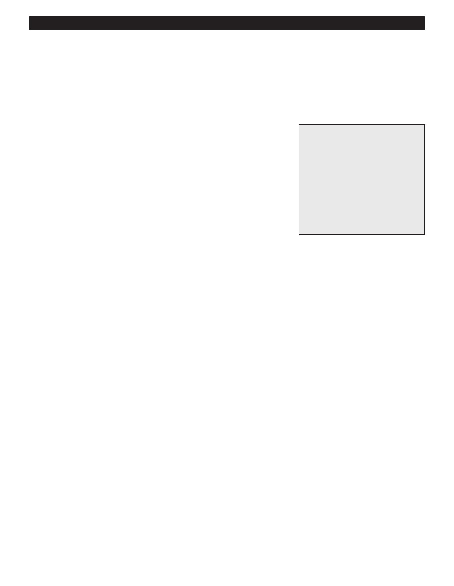

PA RT I C I PA N T R E S O U R C E G U I D E
Ceilings and Walls:
Fixing a Popped Nail or Screw in Drywall
Drywall nail pops occur when drywall screws or nails loosen over time. As a result, the
drywall moves and the nail heads push through the surface, causing a blemish.
Safety
Tools and Materials Needed
Wear eye protection, as well as a mask.
Screwdriver
Drywall screws
Wallboard joint compound
Wallboard taping knife
Fine-grit sandpaper
Cloth
Primer
Paint
How-to Steps:
1. Drive drywall screws through the drywall and into the framing about 3 inches from the nail pop, on both sides. Drive the
heads far enough to sink them slightly below the surface, but don’t break the paper.
2. Remove the existing nail, the one that is “popped,” then carefully “dimple” the popped nail using a hammer. Make a
depression in the drywall that can be filled with joint compound at each nail pop.
3. Fill the dimples with joint compound.
4. Cover each drywall screw head and dimple with a thick coat of compound, then skim off the excess with a wallboard knife.
5. Allow the compound to dry.
6. Apply a second coat, if needed, and allow it to dry.
7. Sand the area with fine-grit sandpaper, feathering the edges into the surrounding wall.
8. Wipe the surface clean.
9. Prime and paint the area, blending in with the paint on the rest of the wall.
TIP: Wet sanding with a sponge = (No Dust)
Notes:
12